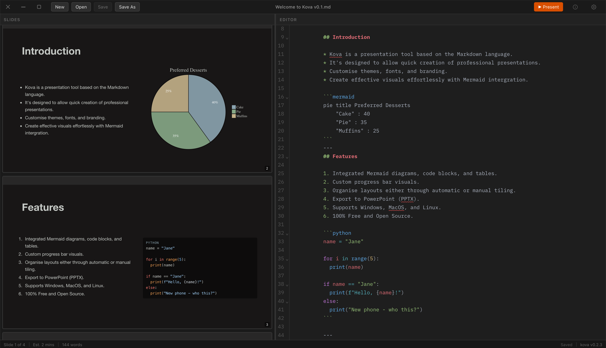
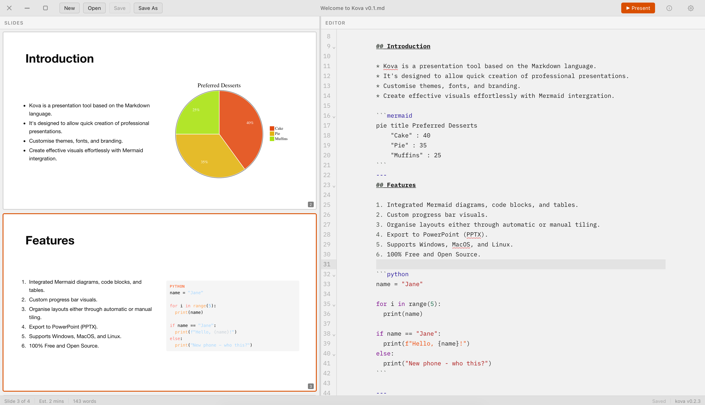
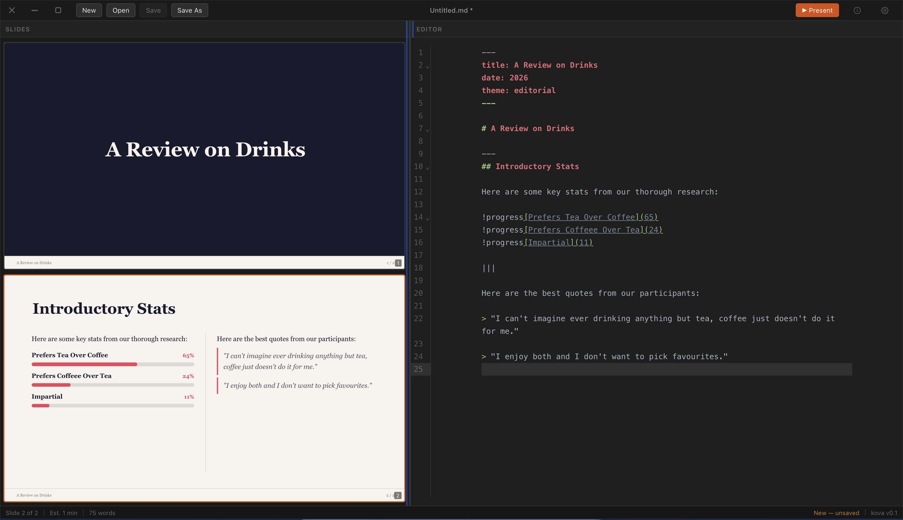
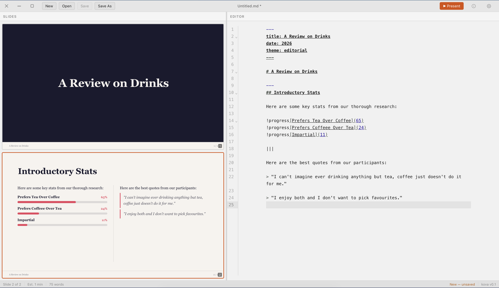
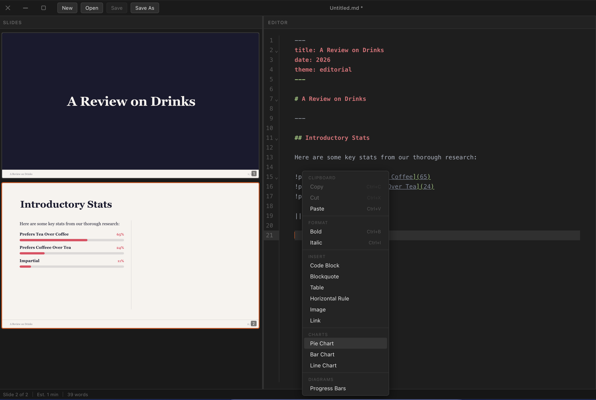
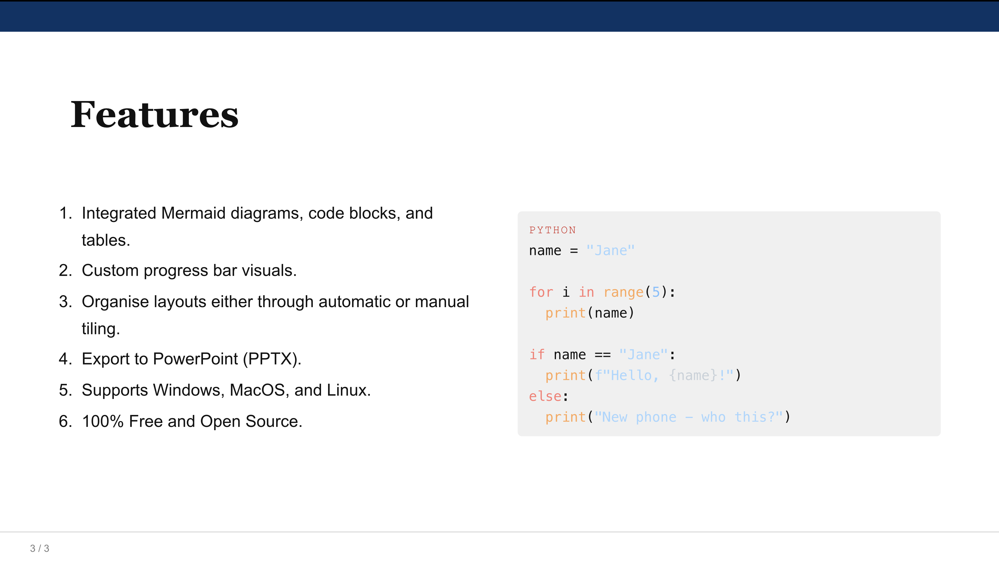
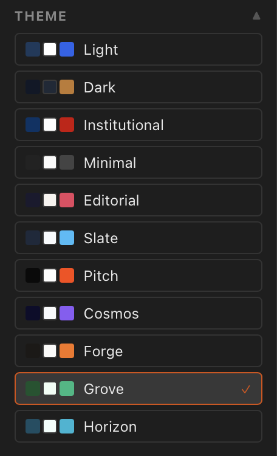
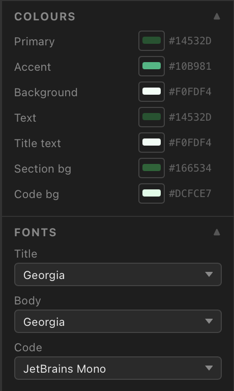
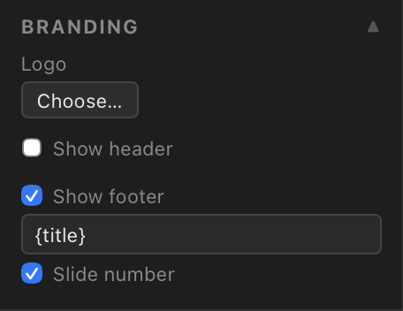

Get started
in seconds.
Free, open source, and runs natively on macOS, Linux, and Windows.
Kova turns Markdown into polished presentations — fast, private, and runs entirely on your machine. For developers, educators, and anyone who prefers writing to clicking.


Features
Built for developers, educators, and anyone converting knowledge into clear, engaging presentations.
Slides separated by ---. Headings set the layout. Write like you always have, get polished slides out the other end.
Title, section, two-column, quote, grid, and full-bleed layouts — detected automatically from your content structure.
Pie, bar, and line charts plus flowcharts — rendered inline from fenced code blocks. No image exports needed.
Drop in an existing .md file and Kova turns it into a presentation. Convert knowledge base articles into training decks instantly.
Fenced code blocks rendered with highlight.js — 190+ languages. Your code looks as good as your slides.
Every action has a shortcut. Fully remappable via ~/.kova/keybindings.yaml — no settings UI required.
In action
A handful of conventions give you powerful layouts — detected automatically from your content structure. Right-click to insert charts, tables, and more.




Customise
Switch themes instantly from the inspector panel. Build your own as simple YAML files and share them with the community.



Free, open source, and runs natively on macOS, Linux, and Windows.